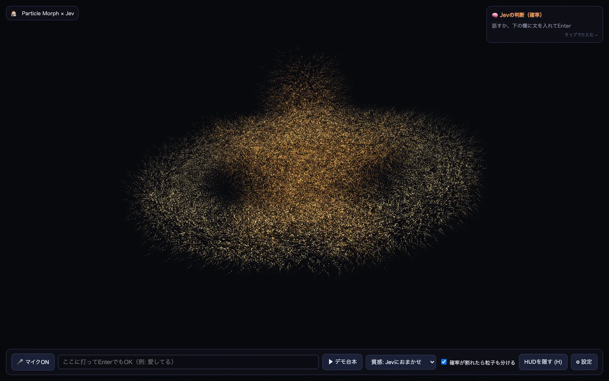

体験
多くの事例は、分布の中から最上位の1つを選んで実行する。この事例は、分布をそのまま見た目の配分に使う。65%と34%に割れた判断は、2つの形が混ざった絵になる。
- 「確率が割れたら粒子も分ける」は、利用者が切り替えられる。最上位だけを見せるか、割れ方まで見せるかを、選べる。
- 質感も既定ではJevに任せるが、選択欄で利用者が指定できる。判断に任せる範囲を、利用者が決められる。
- 判断のパネルは畳める。表現を見たいときと、判断を読みたいときで、画面を使い分けられる。
- 残り回数を表示している。公開デモの利用上限を、先に伝えている。
- 誤った判断の害が小さい。曖昧さを直さずに、表現の材料として使える領域である。
キャプチャ
{kind=link}

（原寸の画像を開く）見る箇所右上の「Jevの判断（確率）」パネル、下端のマイク、入力欄、デモ台本、「質感: Jevにおまかせ」、「確率が割れたら粒子も分ける」のチェック
入力から画面の変化まで
-
判断への入力
マイクで話した言葉、または入力欄に書いた日本語の文。調査時の操作では「雨の日にコーヒーを飲みたい」。
-
Jevの判断
文に合う形と、粒子の質感。調査時の操作では、形がcoffee 65%、rain 34%、koko 1%、質感が呼吸 86%、雨 11%と表示された。
-
結果がUIをどう変えるか
「Jevの判断（確率）」パネルに分布が出て、粒子が形を変える。調査時の操作では、粒子が66対34に分かれ、コーヒーと、雨や傘のような形が同時に現れた。レイテンシ、入力トークン数、その日の残り回数も表示された。
- 判断型の見立て
- Choice推定
- 公開画面は「Jevの判断（確率）」として候補ごとの確率を出す。形と質感をそれぞれ選択として尋ねているという見立てで、質問型は明記されていない。
Jevとの適合
短い文を、有限の形の候補へ確率つきで対応づけるのは、Jevに向く。確率を隠さず、配分として使うため、分布が出力されるという性質をそのまま生かしている。形の候補の決め方や、判断の妥当性は、評価の対象になっていない。
確認範囲と未確認事項
日本語の作者による投稿と公開サイトを確認。掲載した画面は公開サイトを開いた直後の状態で、入力の前のもの。判断の値は調査時の操作記録による。サーバー側の実装は公開されておらず、Jevの呼び出しをコードで確かめることはできない。創作のための可視化であり、精度の評価ではない。
- 確認済み公開サイトの初期画面（判断パネル、マイク、入力欄、デモ台本、質感の選択、粒子を分けるチェック）、作者の投稿。判断の値（coffee 65%、rain 34%、koko 1%、呼吸 86%、雨 11%、66対34の分割）と、レイテンシ・トークン数・残り回数の表示は、2026-09-21の調査時の操作記録による
- 未検証サーバー側の実装とJevの呼び出し、形の候補の全体、音声入力での動作、同じ文での再現性
- 推定扱い質問型（Choiceと見立て）。候補ごとの確率が出ることからの見立て
- 引用公開サイト画面を2026-09-21に必要範囲で取得。権利は作者に帰属する